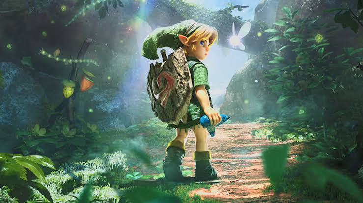
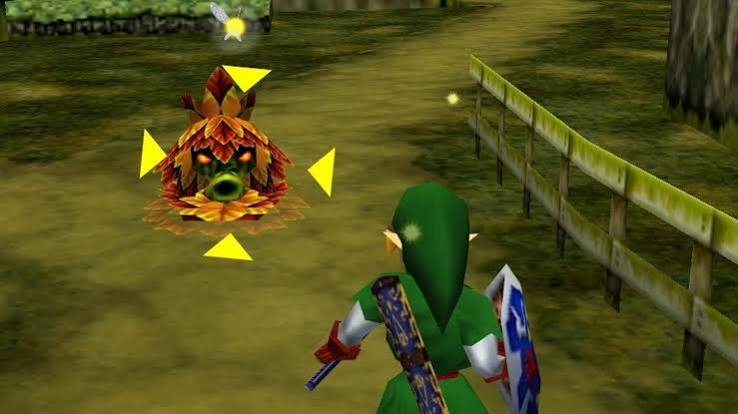
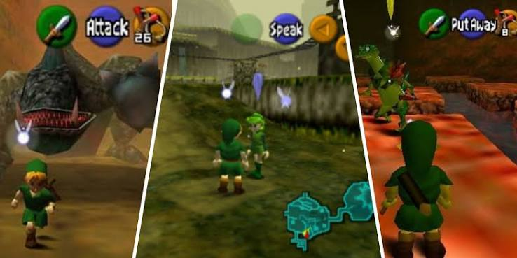
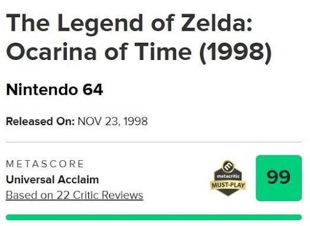
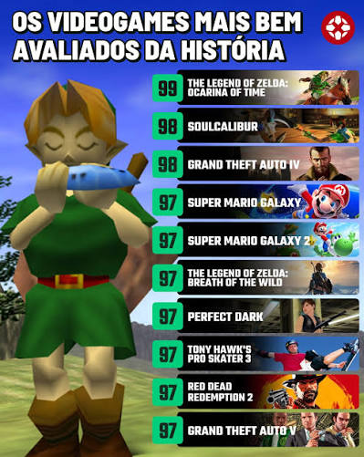

A historia do herói do tempo
The Legend of Zelda: Ocarina of Time conta a história de Link, um jovem garoto que vive na Floresta Kokiri e é escolhido pela Grande Árvore Deku para cumprir uma missão: impedir que o maligno Ganondorf obtenha a Triforce, uma relíquia sagrada capaz de conceder poderes divinos. Em essência: Ocarina of Time é uma história sobre coragem, amadurecimento, amizade, destino e o sacrifício necessário para proteger o mundo do mal.

A revolução que OCT gerou no mundo dos games
The Legend of Zelda: Ocarina of Time (1998) foi um dos jogos mais revolucionários da história dos videogames. Seu impacto foi tão grande que muitos dos conceitos introduzidos ou aperfeiçoados por ele continuam presentes nos jogos modernos, especialmente nos jogos de aventura em 3D. O mais impressionante é que ele não apenas trouxe uma grande aventura: ajudou a estabelecer as regras de como criar jogos de ação e aventura em três dimensões. Vamos aos principais motivos.
- Revolucionou o combate em 3D
- Estabeleceu uma nova linguagem para jogos 3D
- Transformou a narrativa em uma experiência emocional
- Elevou o design de fases a outro patamar
Uma das maiores inovações foi o sistema de Z-Targeting. Antes dele, combater inimigos em ambientes tridimensionais era complicado. O jogador precisava ajustar manualmente a câmera e a direção dos ataques.
O jogo mostrou como transformar um mundo tridimensional em um espaço de exploração intuitivo. A câmera, os controles contextuais e a interação com o cenário foram cuidadosamente integrados. Uma mesma tecla podia servir para abrir uma porta, conversar com alguém, montar em Epona ou realizar uma ação diferente dependendo da situação. Isso tornou a experiência muito mais natural e influenciou profundamente o design de jogos 3D.
A passagem de sete anos foi uma ideia extraordinária. O jogador começava conhecendo Hyrule como uma criança e, ao despertar, encontrava um reino completamente transformado. Essa mudança não era apenas visual: afetava personagens, cidades, músicas e a própria atmosfera do mundo. O jogo demonstrou que os videogames podiam contar histórias complexas utilizando a própria mecânica e a passagem do tempo, em vez de depender exclusivamente de diálogos e cenas cinematográficas.
Os templos de Ocarina of Time são verdadeiras aulas de design de jogos. Cada templo possuía:
- Identidade visual e musical própria.
- Quebra-cabeças interligados.
- Mecânicas específicas.
- Chefes que exigiam compreender as habilidades adquiridas.


Topo absoluto do Metacritic
A nota 99/100 no Metacritic de The Legend of Zelda: Ocarina of Time representa um dos maiores reconhecimentos já concedidos pela crítica especializada a um videogame. Lançado em 23 de novembro de 1998 para o Nintendo 64, o título alcançou essa pontuação com base em 22 análises de veículos especializados, todas classificadas como positivas.
Em perspectiva, o 99 de Ocarina of Time não simboliza simplesmente um jogo quase perfeito. Simboliza um título que conseguiu transcender sua própria geração, influenciar toda uma indústria e estabelecer referências que continuam sendo estudadas décadas depois de seu lançamento.


Uma obra prima está de volta!!!
🏆 Com impressionantes 99/100 no Metacritic, The Legend of Zelda: Ocarina of Time é muito mais do que um jogo: é uma verdadeira lenda que revolucionou a indústria dos games e conquistou gerações de jogadores!
⚔️ Explore o lendário reino de Hyrule, empunhe a Master Sword, enfrente Ganondorf e embarque em uma jornada épica que marcou para sempre a história dos videogames.
🎮 Uma aventura atemporal, reconhecida como uma das maiores obras-primas já produzidas pela Nintendo, agora em uma nova oportunidade de ser vivenciada!
SUA LENDA COMEÇA AQUI!
🛒 Garanta já o seu exemplar e faça parte da história dos videogames. Basta preencher o formulario abaixo: